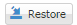
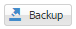

Backup and Restore - refers to the copying and archiving of system data so it may be used to restore the original after a data loss event.
The image here shows with boxes indicated a specific color to justify each functionalities .

Backup and Restore. (Image 1.0)
- Functions (base on Image 1.0)
- Refresh - return to default set up
- Orange box - is a function use to select specific record it has a check and unchecked functionality this will allow the user to download multiple data of backup and can even choose which one is prefered.
- Green Box - is a function to backup specific data.
- Red Box - is a function to delete specific data.
- Blue Box - is a function to download specific data.
For Manual Backup and Restore Schedule,
- Click "restore" button

to restore backup data - Click " backup" button

to manually back up the data of the system
Created with the Personal Edition of HelpNDoc: Free help authoring environment